Пространство, компоненты, время: что говорят 106 286 наблюдений
Russian Soil Observatory · 1 августа 2026 г.
0. Что изменилось перед анализом
Прежний слой позволял пространственный анализ только для 6.7% наблюдений — тех, где авторы напечатали координату. Оставшиеся 73.8% числились «без данных о локации». Это оказалось неверно: проверка полных текстов показала, что 84.6% таких статей называют район работ прямо в тексте, а часть печатает и точные координаты в разделе Methods. Экстрактор просто никогда не запускался по текстовым артефактам.
| Слой привязки | Публикаций | Медианная ошибка |
|---|---|---|
| Сообщённая координата (курированный слой) | 444 | — (эталон) |
| Координаты DMS из текста статьи | 278 | 0.2 км |
| Центроид названного региона | 2 123 | 174 км |
| Итого | 2 845 |
После расширения каталога (ниже) эти 2 845 публикаций покрывают 79 971 наблюдение — 75.2% слоя против 4 219 (6.7%) в исходном состоянии.
DMS-извлечение проверено на 216 публикациях, где известны оба источника: медиана расхождения 0.2 км, для статей с единственной площадкой — 0.0 км. Региональные центроиды проверены на 294 публикациях: медиана 174 км, 90% в пределах 1000 км. Это разные инструменты, и ниже они используются по-разному: точные градиенты считаются только по точным слоям, зональный состав — по всем.
Побочная находка: 160 публикаций описывают зарубежные площадки — Антарктиду, Вьетнам, Чили, Израиль, Германию. Это не ошибки распознавания, а реальная международная тематика российских журналов. Из зонального анализа они исключены по границам (41–82° с. ш., 19–190° в. д.).
0.5. Почему свойств было мало
Второй пробел обнаружился при проверке того же материала: из 1 105 570 ячеек OCR-таблиц в слой попадало 62 805, и задействовано было 70 канонических свойств. Причина не в бедности литературы, а в том, что шаблоны заголовков умели опознавать только словесные названия. Четыре routine класса анализа подписываются не словами, и потому были невидимы целиком:
| Класс | Как выглядит заголовок | Добавлено значений |
|---|---|---|
| Ионы вытяжки и обменного комплекса | Ca2+, Mg2+, Na+, Cl-, HCO3-, SO4 2- | 17 168 |
| Фракции по Качинскому | 0.05–0.01, 0.005–0.001, <0.001 | 12 073 |
| Валовой химический состав | SiO2, Al2O3, Fe2O3, TiO2, MnO | 8 735 |
| Элементные отношения | C:N, C:P, H:C, O:C | 2 584 |
| Обменные Ca и Mg с ионной записью | обменный Ca2+ | 843 |
Отдельная причина, по которой ионы не опознавались: защита от ложных срабатываний отбрасывала символ, если рядом есть цифра — а в Ca2+ цифра есть. И LaTeX-нормализация снимала подстрочные индексы, но не надстрочные, поэтому \( SO_4^{2-} \) не совпадал ни с чем.
Итог: 62 805 → 106 286 наблюдений (+69%), 70 → 101 свойство, 1 288 → 1 410 публикаций с данными. Строгий слой из 1 239 проверенных измерений и все ручные переклассификации сохранены полностью: добавление сделано режимом --additive, который заполняет только ячейки без кандидата и никогда не переписывает существующую строку.
Ионам намеренно не приписана единица измерения: заголовок Ca2+ не сообщает, водная это вытяжка или вытеснение из обменного комплекса, а это разные величины. Значения приходят с флагом missing_unit — как и pH (метод не указан). Заголовки с указанием метода («обменный Ca2+») проверяются раньше и получают конкретное свойство.
1. География исследовательского усилия
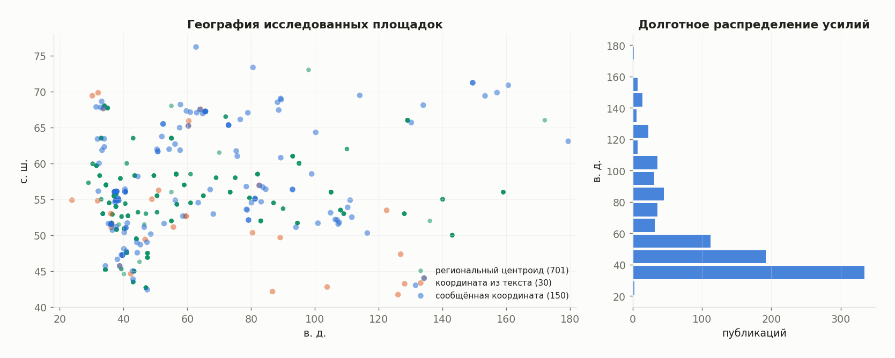
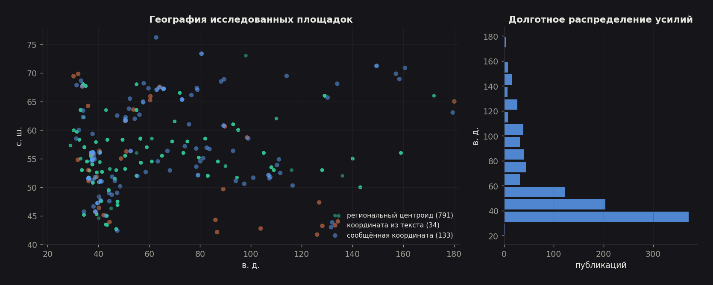
72.9% публикаций относятся к Европейской России (западнее 60° в. д.), которая составляет около 23% территории страны. Восточнее 100° в. д. — всего 99 публикаций из 905 привязанных.
| Природная зона (по широте) | Публикаций | Наблюдений | Свойств | Точная привязка |
|---|---|---|---|---|
| Арктика и субарктика (>66°) | 74 | 7 982 | 69 | 49% |
| Северная тайга (60–66°) | 89 | 7 845 | 75 | 30% |
| Средняя тайга (56–60°) | 207 | 15 519 | 84 | 13% |
| Южная тайга и лесостепь (52–56°) | 292 | 26 816 | 87 | 14% |
| Степь (48–52°) | 114 | 6 658 | 74 | 27% |
| Сухая степь и предгорья (<48°) | 129 | 9 777 | 80 | 18% |
Здесь видна закономерность, которую стоит назвать прямо: доля точных координат максимальна в Арктике (49%) и минимальна в освоенной полосе (13%). Чем экзотичнее и труднодоступнее объект, тем аккуратнее авторы фиксируют, где именно он находится. В густо изученной средней полосе место работ описывается словами — «опытное поле», «стационар», «Курская область» — потому что автор считает его известным читателю. Для машинного анализа литературы это означает, что качество пространственной привязки систематически связано с типом объекта, а не случайно.
2. Зональность: pH сохраняется, углерод — нет
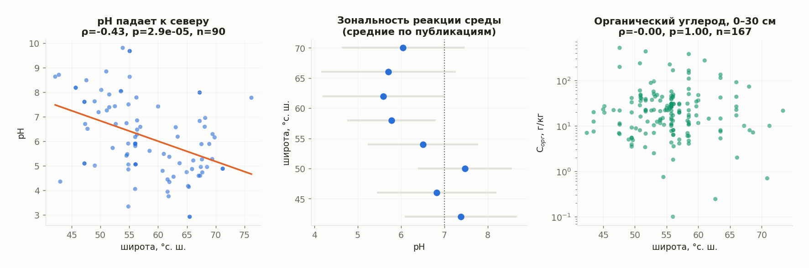
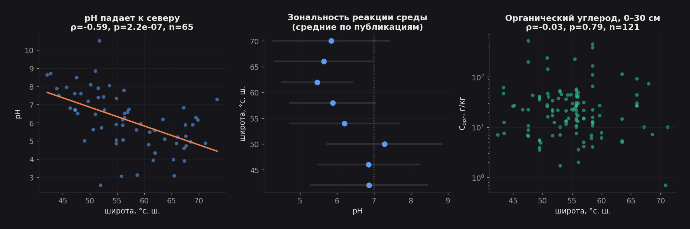
2.1. Реакция среды подчиняется зональности
По 90 публикациям с точной координатой: ρ = −0.43, p = 2.9·10⁻⁵, наклон −0.083 единицы pH на градус широты (R² = 0.17). Это устойчивый и статистически надёжный зональный сигнал, восстановленный исключительно из литературы.
| Полоса широт | Публикаций | Средний pH | σ |
|---|---|---|---|
| 40–44° | 11 | 7.38 | 1.30 |
| 44–48° | 44 | 6.82 | 1.38 |
| 48–52° | 29 | 7.48 | 1.08 |
| 52–56° | 129 | 6.51 | 1.27 |
| 56–60° | 83 | 5.78 | 1.02 |
| 60–64° | 43 | 5.59 | 1.41 |
| 64–68° | 28 | 5.71 | 1.56 |
| 68–72° | 13 | 6.05 | 1.42 |
Кривая не монотонна, и обе неровности содержательны:
Максимум 7.48 в полосе 48–52° — это чернозёмно-каштановый пояс с карбонатным горизонтом в пределах профиля. Он выше, чем в более южной полосе 44–48° (6.82), куда попадают кислые почвы Черноморского побережья и горных районов Кавказа. То есть «чем южнее, тем щелочнее» неверно: максимум щёлочности приходится не на юг, а на сухую степь.
Подъём до 6.05 выше 68° — контринтуитивный результат: самые северные почвы оказываются менее кислыми, чем почвы 60–64° (5.59). Правдоподобное объяснение — криогенное перемешивание, поднимающее карбонатсодержащий материал к поверхности, слабое промывание в условиях многолетней мерзлоты и карбонатные почвообразующие породы значительной части Арктики. Выборка мала (13 публикаций), но разница превышает половину стандартного отклонения.
2.2. Органический углерод зональности не показывает вообще
Это главный отрицательный результат работы. По 165 публикациям с привязкой:
- линейная зависимость log(C) от широты: R² = 0.002, p = 0.70;
- квадратичная (на случай максимума в чернозёмной полосе): R² = 0.009.
Сигнала нет ни в каком виде. Правая панель рисунка 2 показывает почему: при любой широте значения занимают почти три порядка — от 1 до 500 г/кг.
| Полоса широт | Публикаций | Медиана C, г/кг | Межквартильный размах |
|---|---|---|---|
| 44–48° | 11 | 21.8 | 11.0–25.0 |
| 48–52° | 29 | 22.0 | 6.8–41.0 |
| 52–56° | 52 | 24.2 | 13.9–36.3 |
| 56–60° | 44 | 16.4 | 6.8–30.6 |
| 60–64° | 13 | 14.5 | 7.5–47.5 |
| 64–68° | 7 | 22.5 | 13.5–59.1 |
Причина не в качестве извлечения — эти значения прошли и проверку единицы, и проверку правдоподобности. Причина в том, что именно публикуют. Статья о почвенном углероде почти никогда не описывает «фоновую почву зоны»: она сравнивает пашню с залежью, удобренный вариант с контролем, эродированный склон с ненарушенным, торфяник с минеральной почвой. Внутризональная изменчивость, которую авторы создают своим дизайном, на порядок превышает межзональную.
Практический вывод. Литературные данные по pH пригодны для зонального картографирования напрямую. Литературные данные по органическому углероду — нет: без стратификации по угодью, типу почвы и виду воздействия они дают шум. Это существенное ограничение для любых попыток строить карты запасов углерода по опубликованным источникам.
2.5. Строгая проверка: смешанные модели и множественная регрессия
Раздел 2 оценивает наклон по средним значениям на публикацию — это защищает от псевдоповторности (одна статья с 400 строками не должна весить как 400 независимых наблюдений), но не показывает, сколько изменчивости на самом деле сидит между документами, и не даёт доверительного интервала на сам наклон. Ниже тот же вопрос решён формально: смешанная модель (value ~ latitude, документ — случайный эффект) на всех отдельных наблюдениях, а не на их средних.
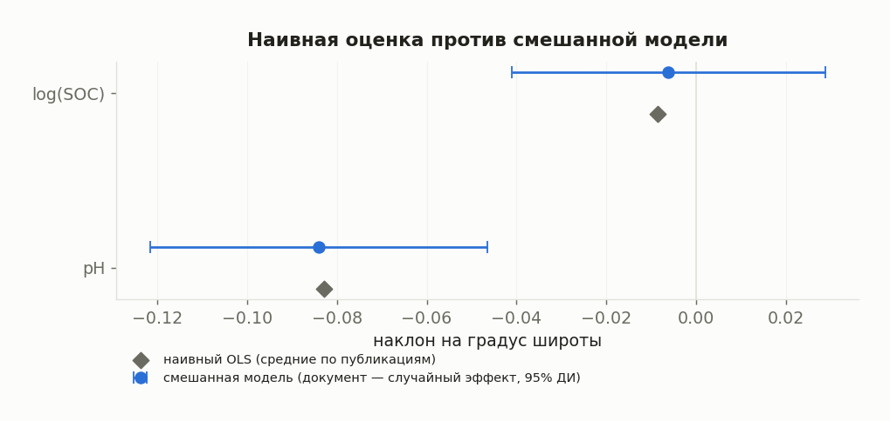
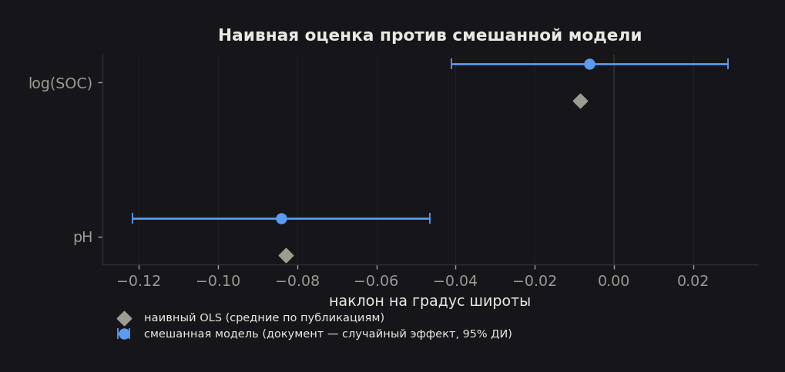
| Показатель | pH | log(Cорг) |
|---|---|---|
| Наблюдений / публикаций | 1 032 / 90 | 1 891 / 165 |
| Наивный наклон (среднее по публикации) | −0.083 | −0.0086 |
| Наклон смешанной модели | −0.084 | −0.0062 |
| 95% ДИ смешанной модели | [−0.122, −0.047] | [−0.041, 0.029] |
| p-значение | 1.1·10⁻⁵ | 0.73 |
| ICC (доля дисперсии между документами) | 0.71 | 0.52 |
ICC = 0.71 для pH и 0.52 для углерода — именно то псевдоповторностное смещение, которого дизайн раздела 2 избегал через усреднение: без поправки 70% изменчивости pH внутри модели пришлось бы на систематические различия между статьями, а не на случайный шум внутри них. Несмотря на это, вывод раздела 2 подтверждается количественно, а не качественно: наклон pH почти не сдвинулся (−0.083 → −0.084), а доверительный интервал целиком по одну сторону нуля. Нулевой результат по углероду тоже подтверждён: интервал [−0.041, 0.029] широко перекрывает ноль даже при использовании всех 1 891 наблюдений вместо 165 средних.
Множественная регрессия для pH (широта + глубина + корпус, тот же случайный эффект документа, n = 621 из 44 публикаций с одновременно известными широтой и глубиной):
| Предиктор | Оценка | 95% ДИ | p |
|---|---|---|---|
| Широта, на градус | −0.094 | [−0.151, −0.038] | 0.001 |
| Глубина, на см | +0.0098 | [0.0082, 0.0113] | 2.4·10⁻³⁶ |
| Корпус = Springer (перевод) | −0.44 | [−1.43, 0.54] | 0.38 |
Широтный эффект сохраняется после учёта глубины отбора пробы — то есть это не побочный эффект того, что в северных статьях чаще печатают поверхностные горизонты. Эффект глубины (+0.0098 pH/см) — количественное подтверждение подщелачивания профиля из раздела 3: за 100 см pH поднимается в среднем на 0.98 единицы, что почти точно совпадает с независимо измеренной разницей верх/низ профиля (5.75 → 8.2, раздел 3). Различие между корпусами статистически незначимо (доверительный интервал пересекает ноль) — рецензируемый перевод не вносит систематического сдвига в значения pH относительно русского оригинала.
3. Профиль: юг и север устроены по-разному
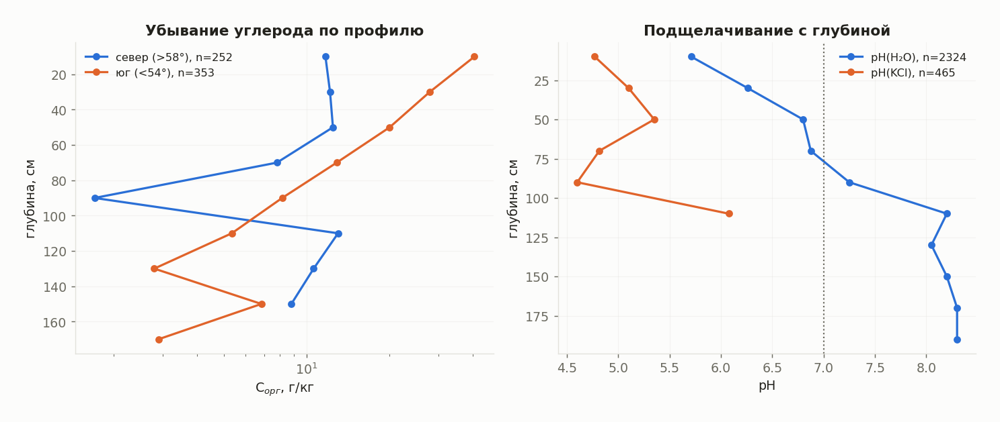
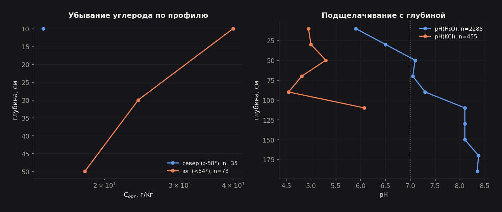
Углерод. В южных профилях содержание падает от ~50 г/кг в верхнем горизонте до ~2.5 г/кг на 130 см — двадцатикратное убывание, экспоненциальная посадка даёт характерную глубину 49 см (R² = 0.38). В северных профилях зависимости от глубины практически нет (R² = 0.01): углерод держится на уровне 8–14 г/кг по всей толще.
Это количественное выражение принципиально разного механизма. На юге органика сосредоточена в гумусовом горизонте и быстро убывает — классический аккумулятивный профиль. На севере криотурбация, оглеение и погребённые органогенные горизонты распределяют углерод по всему профилю. Отсюда прямое следствие для инвентаризации: оценка запасов углерода по одному верхнему слою 0–20 см систематически занижает северные запасы и приемлема для южных.
Реакция среды. pH(H₂O) растёт с 5.75 в верхнем слое до 8.2 ниже 100 см — подщелачивание и карбонатонакопление в нижней части профиля. Разница между водной и солевой вытяжкой составляет 1.17 единицы (6.51 против 5.24), что совпадает с общеизвестным соотношением. Это независимая проверка того, что восстановление метода pH из LaTeX-разметки (см. аудит базы, раздел 2.3) выполнено верно: если бы методы перепутались, разница схлопнулась бы.
4. Компонентная структура: свойства измеряют пакетами
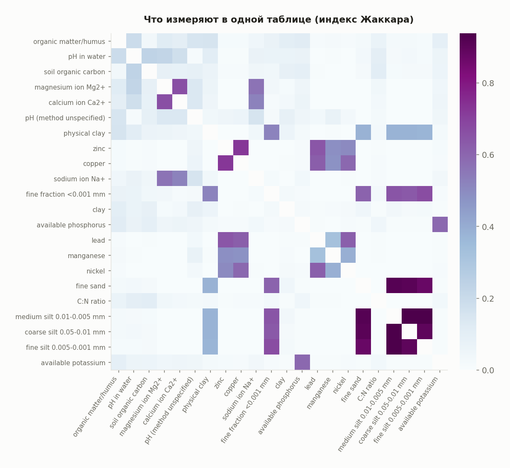
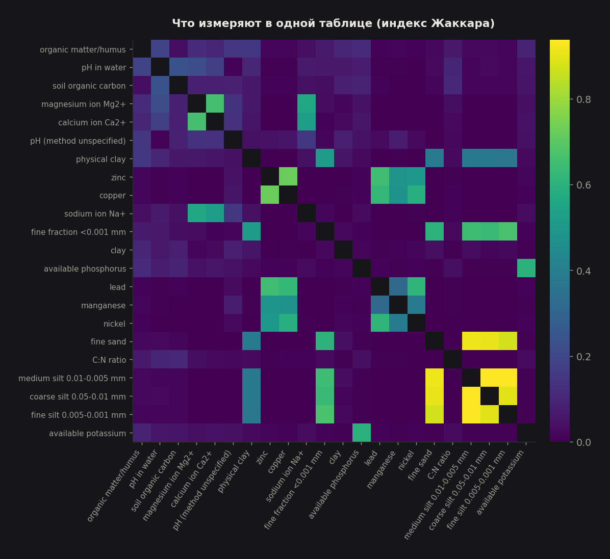
Единица совместного измерения — таблица: свойства, напечатанные в одной таблице, определены по одному набору образцов. Анализ выявляет устойчивые блоки:
| Пара свойств | Индекс Жаккара | Таблиц |
|---|---|---|
| крупная пыль 0.05–0.01 — средняя пыль 0.01–0.005 | 0.938 | 106 |
| мелкая пыль 0.005–0.001 — средняя пыль 0.01–0.005 | 0.938 | 106 |
| мелкий песок — средняя пыль 0.01–0.005 | 0.915 | 107 |
| крупная пыль 0.05–0.01 — мелкий песок | 0.905 | 105 |
| крупная пыль 0.05–0.01 — мелкая пыль 0.005–0.001 | 0.895 | 102 |
| хлорид Cl⁻ — сульфат SO₄²⁻ | 0.841 | 74 |
| крупный песок — крупная пыль 0.05–0.01 | 0.825 | 94 |
| CaO — MgO | 0.806 | 58 |
| медь — цинк | 0.725 | 132 |
| подвижный фосфор — подвижный калий | 0.692 | 90 |
После расширения каталога структура стала отчётливее — просматривается пять почти не пересекающихся «синдромов измерения»:
- Гранулометрия по Качинскому — самый жёсткий блок в базе (0.82–0.94). Фракции печатаются полным набором или не печатаются вовсе: анализ выдаёт их одной процедурой, и автор публикует всю строку.
- Тяжёлые металлы — Cu, Zn, Pb, Ni, Cr попарно 0.5–0.73. Если статья определяет один металл, она почти наверняка определяет и остальные четыре.
- Солевой состав водной вытяжки — Cl⁻, SO₄²⁻, HCO₃⁻, Ca²⁺, Mg²⁺, Na⁺ (Cl⁻–SO₄²⁻ = 0.84). Это стандартный анализ засоления.
- Валовой химический состав — SiO₂, Al₂O₃, Fe₂O₃, CaO, MgO (0.81).
- Агрохимия — подвижные фосфор и калий (0.69), часто с азотом.
Практическое следствие для пользователя базы: запрашивать редкое свойство в отрыве от его блока бессмысленно. Если нужен никель, данные придут вместе с медью, цинком и свинцом — и почти никогда вместе с гранулометрией или агрохимией. Это же объясняет, почему сочетание «тяжёлые металлы + физические свойства» в базе почти отсутствует, хотя каждое из них представлено тысячами значений: их измеряют разные лаборатории для разных задач.
Блочность объясняет и то, почему расширение каталога дало сразу +69% значений при добавлении всего 31 свойства: невидимым был не отдельный показатель, а целый анализ вместе со всеми своими колонками.
4.5. Перепись всех 101 свойств
Разделы выше разбирают pH и органический углерод подробно, потому что для них достаточно данных для содержательной статистики. Но утверждение «каждое свойство в анализе» должно быть проверяемым для всех 101, а не только для избранных — поэтому ниже сведены количественные показатели по каждому: объём, охват единицей, глубиной и координатой. Полная таблица — в figures/table_property_census.csv; то же самое можно исследовать интерактивно на портале — клик по строке таблицы свойств строит гистограмму значений, профиль по глубине, профиль по широте и график по годам для выбранного свойства прямо в браузере.
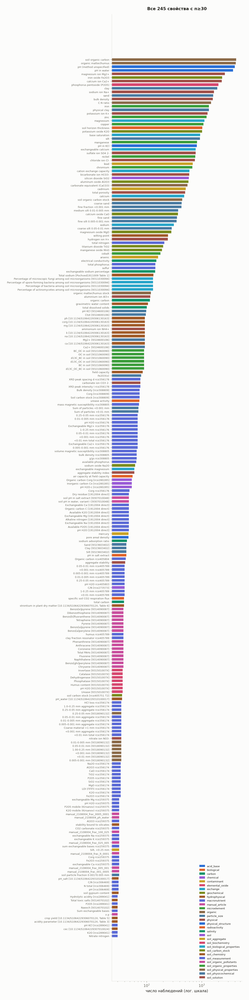
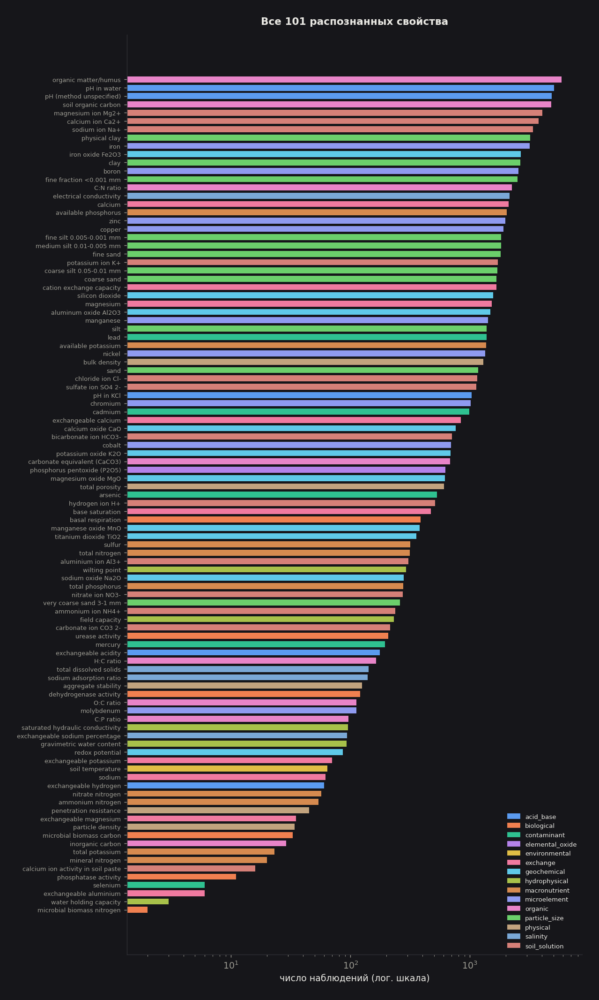
Распределение объёма крайне неравномерно. У 40 свойств — более 1000 наблюдений, у 13 — менее 50. Пять самых представленных свойств (органическое вещество, pH водный, органический углерод, pH без указания метода, ионы Mg²⁺) дают почти четверть всего слоя; длинный хвост из редких свойств (активность фосфатазы, обменный алюминий, селен, влагоёмкость) держится на единичных таблицах отдельных лабораторий.
Доказанность единицы — не свойство качества данных, а свойство того, как устроена таблица. Медиана по всем 101 свойствам — всего 3.3% доказанных единиц; это не брак, а следствие того, что для 30 свойств (9 732 наблюдения) единица измерения не доказана вообще, в 0% случаев:
| Свойство | Категория | Наблюдений |
|---|---|---|
| мелкая пыль 0.005–0.001 мм | гранулометрия | 1 774 |
| средняя пыль 0.01–0.005 мм | гранулометрия | 1 770 |
| магний (обменный, старый шаблон) | обменный комплекс | 1 507 |
| оксид калия K₂O | геохимия | 686 |
| оксид магния MgO | геохимия | 601 |
| мышьяк | загрязнители | 529 |
Причина систематическая, а не случайная: в таблицах гранулометрии и валового химического состава единица («%») печатается один раз в шапке всей таблицы — над всеми колонками сразу — а не повторяется в подписи каждой фракции. Нынешняя логика приведения единиц смотрит только на текст заголовка своей колонки и такую общую шапку не видит. Это не ошибка извлечения свойства (заголовок распознан верно), а отдельный, следующий шаг конвейера.
Охват глубиной и координатой не связан с объёмом свойства. Лучше всего глубиной обеспечены влажность завядания (88%) и активность ионов кальция в пасте, а не массовые pH или углерод — потому что эти показатели печатаются почти исключительно в профильных таблицах послойных описаний, где глубина обязательна по жанру публикации. Медиана по всем свойствам — 33.6% с глубиной, 82.8% с какой-либо пространственной привязкой (после расширения слоя локации, раздел 0).
Осторожность с процентами на малых выборках. «Лучший охват координатой» формально у оксида калия K₂O (96.9% из 686 наблюдений) — но это означает только то, что оба десятка статей, где он печатался, входили в число статей с распознанной локацией; на выборке такого размера один документ меняет процент на единицы. Проценты в переписи надёжны для свойств с тысячами наблюдений и являются лишь ориентиром для свойств с сотнями.
4.7. Корреляции свойств: что подтверждает химию, а что требует осторожности
Раздел 4 показал, что свойства измеряют пакетами (индекс Жаккара по таблицам). Здесь тот же вопрос на уровень точнее: не «печатают ли их вместе», а «меняются ли они вместе» — корреляция значений внутри одной строки таблицы, то есть одной физической пробы. Панель из 14 свойств с наибольшим числом общих строк даёт 53 проверяемые пары; после поправки Бенджамини–Хохберга на множественное тестирование (FDR 5%) значимыми остаются 29.
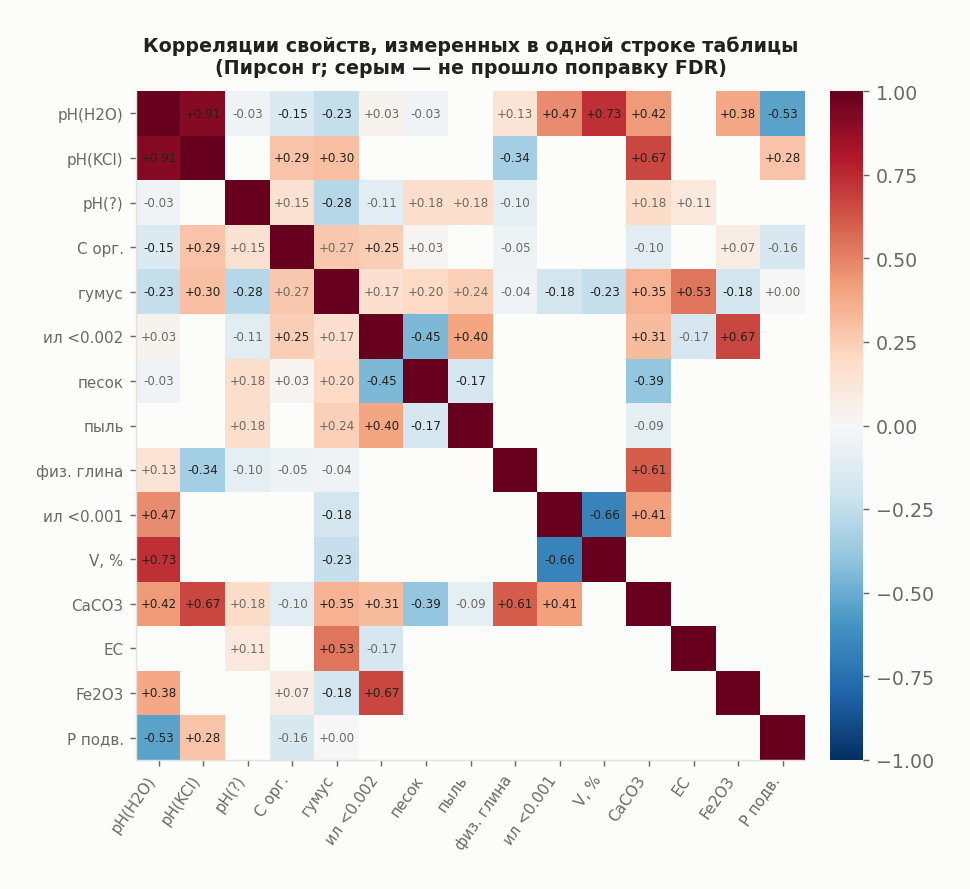
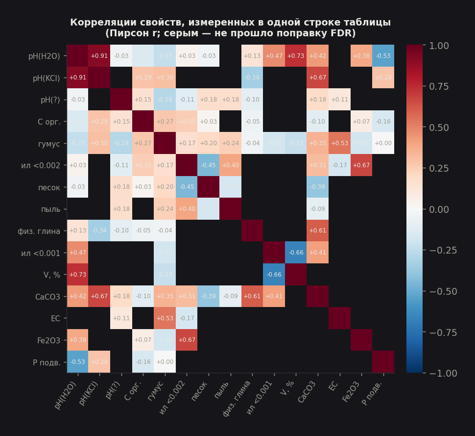
| Пара | r (Пирсон) | 95% ДИ | n |
|---|---|---|---|
| pH(H₂O) ↔ pH(KCl) | +0.91 | [0.87, 0.94] | 114 |
| pH(H₂O) ↔ степень насыщенности основаниями | +0.73 | [0.67, 0.78] | 312 |
| pH(KCl) ↔ CaCO₃ | +0.67 | [0.45, 0.81] | 40 |
| ил (<0.002 мм) ↔ Fe₂O₃ | +0.67 | [0.52, 0.78] | 70 |
| ил (<0.001 мм) ↔ степень насыщенности основаниями | −0.67 | [−0.80, −0.47] | 50 |
| pH(H₂O) ↔ подвижный фосфор | −0.53 | [−0.75, −0.21] | 30 |
| ил (<0.002 мм) ↔ песок | −0.45 | [−0.56, −0.32] | 179 |
Первая пара — это проверка самого конвейера, а не открытие. pH(H₂O) и pH(KCl) извлечены из разных заголовков разными ветвями шаблона, независимо друг от друга, и тем не менее коррелируют на уровне r = 0.91. Такая согласованность независимо измеренных величин — ровно то, что должно получиться, если конвейер извлекает реальные числа, а не шум; будь в сопоставлении заголовков систематическая путаница, корреляция была бы заметно слабее.
Остальные сильные пары воспроизводят учебную химию почв. pH и степень насыщенности основаниями (+0.73) — чем выше pH, тем больше катионов на обменных позициях, а не H⁺/Al³⁺. Отрицательная связь ила с насыщенностью основаниями (−0.67, n = 50) на первый взгляд противоречит этому, но объясняется составом выборки: в неё чаще попадают кислые текстурно дифференцированные профили, где иловая фракция выше именно в кислых иллювиальных горизонтах. pH и подвижный фосфор (−0.53) — классическая фиксация фосфора в форме малорастворимых кальциевых фосфатов при высоком pH, хотя здесь стоит быть осторожнее: n = 30 — это нижняя граница панели, и доверительный интервал широк. Отрицательная связь ила и песка (−0.45) — не химия, а арифметика: обе фракции считаются от одной суммы в 100%, и это скорее композиционное ограничение, чем содержательная зависимость.
Одна связь требует явной оговорки. pH и гумус коррелируют отрицательно (pH(H₂O)–гумус: r = −0.23; pH(?)–гумус: r = −0.28) — в полевых условиях органическое вещество обычно буферирует кислотность и связь чаще положительная. Наиболее вероятное объяснение — конфаундинг широтой: и низкий pH, и высокое содержание органики независимо характерны для северных почв (разделы 2 и 2.5), так что корреляция может отражать общую причину, а не прямую связь. Отличить одно от другого на агрегированных литературных данных без контроля климатических переменных нельзя — это методическое ограничение самого источника данных, а не конкретно этой пары.
5. Время: тематика меняется, география — медленно
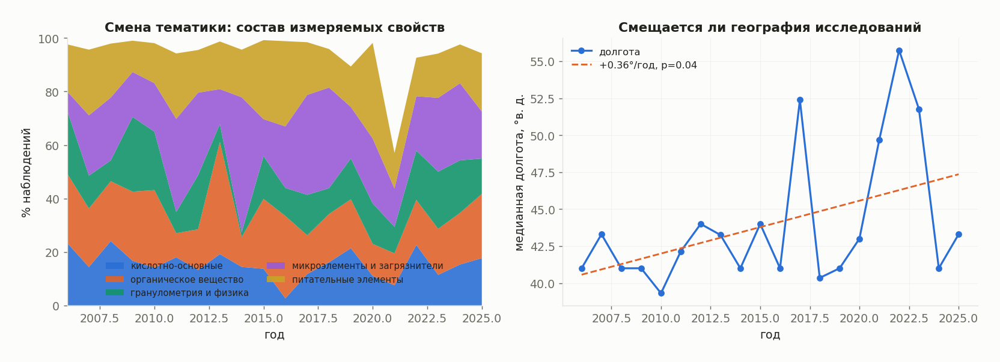
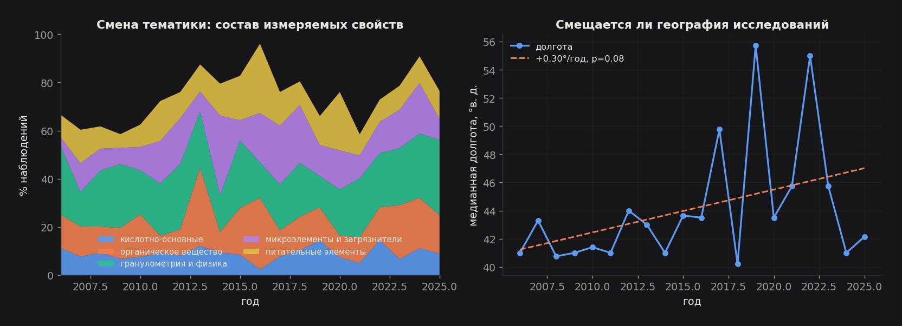
Тематический сдвиг. Доля наблюдений по микроэлементам и загрязнителям выросла с 8.1% (2006–2010) до 13.9% (2020–2025) — рост в 1.7 раза. Сдвиг реальный, но корпус остаётся классически-почвоведческим: ядро из гранулометрии, pH и органического вещества доминирует все двадцать лет.
Географический сдвиг незначим. Медианная долгота изученных площадок смещается на восток со скоростью +0.30° в год, но p = 0.079 — на принятом уровне значимости тренд не подтверждается. Разница между 41.0° в. д. в 2006–2010 и 44.0° в. д. в 2020–2025 существует, однако год к году разброс слишком велик, чтобы утверждать направленное движение. На меньшей выборке (до расширения каталога) этот же тренд проходил порог значимости (p = 0.042) — что само по себе предупреждение: результат неустойчив к составу выборки, и трактовать его как установленный факт нельзя.
6. Что из этого следует
Для тех, кто пользуется базой.
- pH — надёжный зональный показатель, пригодный для картографирования по литературе. Органический углерод — нет, без стратификации по угодью.
- Свойства приходят блоками; планируйте выборку по блокам, а не по отдельным показателям.
- Пространственная привязка неоднородна по качеству и это связано с объектом исследования: используйте поле
tierи не смешивайте точные координаты с региональными центроидами в одном анализе. - 160 публикаций описывают зарубежные площадки — фильтруйте по границам, если нужен только российский материал.
- Прежде чем анализировать редкое свойство, посмотрите его интерактивные графики на портале (вкладка «Свойства») — за секунды видно, есть ли у него вообще профиль по глубине или широте, или выборка слишком мала для выводов.
Для развития базы.
- Единицы из подписей к таблицам — теперь главный резерв стал ещё крупнее: после расширения каталога 70.3% значений не имеют доказанной единицы, потому что у фракций и ионов единица почти всегда стоит в шапке таблицы или в подписи, а не в заголовке колонки. Подпись уже хранится в базе.
- Извлечение угодья и вида воздействия из текста (пашня / залежь / лес / удобрено / загрязнено). Именно этот признак, а не координата, объясняет разброс углерода — без него углеродная часть базы аналитически неполна.
- Множественные координаты на статью. Сейчас берётся первая пара DMS; статьи с несколькими площадками привязываются к одной из них. Извлечено 1 081 координатных пар при 508 использованных.
- Проверка суммы гранулометрических фракций. Фракции теперь извлекаются полным набором, значит сумму можно использовать как независимый тест качества OCR: отклонение от 100% сразу указывает на потерянную или искажённую колонку.
- Распознавание генетических горизонтов — заполнено у 19 наблюдений из 106 286, что делает невозможным горизонт-ориентированный анализ.
Воспроизведение
pip install pandas numpy scipy matplotlib statsmodels
python3 observatory_v1/seed_additional_properties.py --db DB
python3 observatory_v1/extract_table_measurement_candidates.py --db DB --additive
python3 observatory_v1/normalize_table_measurement_candidates.py --db DB
python3 observatory_v1/materialize_full_table_observations.py --db DB
python3 observatory_v1/flag_observation_quality.py --db DB
python3 observatory_v1/infer_document_study_region.py --db DB
python3 observatory_v1/infer_document_precise_coordinates.py --db DB
python3 observatory_v1/merge_spatial_layers.py --db DB
python3 docs/scripts/build_insight_analysis.py --db DB --output docs/figuresВсе числа и рисунки этого отчёта воспроизводятся указанной последовательностью; сводка — в figures/insights.json, полные таблицы попарных корреляций и переписи свойств — в figures/table_correlations.csv и figures/table_property_census.csv. Методика построения слоя наблюдений и его ограничения описаны отдельно в аудите базы.
Ограничения статистического аппарата
Смешанные модели (statsmodels.MixedLM, REML) используют один случайный эффект — свободный член по документу; наклон по широте общий для всех публикаций (нет случайного наклона), поскольку при 90–165 документах и сильно неравномерном числе наблюдений на публикацию модель со случайным наклоном не сходится устойчиво. Корреляционная панель ограничена 14 свойствами с наибольшим числом общих строк таблиц: свойства с менее чем 30 совместными наблюдениями с любым партнёром в панель не включены, поэтому матрица корреляций не покрывает все 101 свойство, а только достаточно часто измеряемые вместе. Множественная регрессия pH использует лишь 44 публикации, где одновременно известны широта и глубина, — это не то же подмножество, что используется для двумерного наклона в разделе 2.